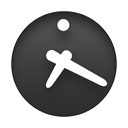

<div style=" background-image: url(images/back.jpg)">
<ons-toolbar>
    <div class="left"><ons-back-button>Back</ons-back-button></div>
    <div class="center">今日の予定</div>
</ons-toolbar>

<table rules="groups">
  <caption>時間割</caption>
  <tr style="background:lightyellow" width="10">
    <th width="80">月　</th>
    <th width="80">火　</th>
    <th width="80">水　</th>
    <th width="80">木　</th>
    <th width="80">金　</th>
  </tr>
  <tr>
    <td>数学</td>
    <td>古文</td>
    <td>物理</td>
    <td>化学</td>
    <td>現代文</td>
  </tr>
  <tr>
    <td>世界史</td>
    <td>物理</td>
    <td>公民</td>
    <td>数学</td>
    <td>体育</td>
  </tr>
  <tr>
    <td>数学</td>
    <td>古文</td>
    <td>物理</td>
    <td>化学</td>
    <td>現代文</td>
  </tr>
  <tr>
    <td>世界史</td>
    <td>物理</td>
    <td>公民</td>
    <td>数学</td>
    <td>体育</td>
  </tr>
  <tr>
    <td>数学</td>
    <td>古文</td>
    <td>物理</td>
    <td>化学</td>
    <td>現代文</td>
  </tr>
  <tr>
    <td>日本史</td>
    <td>音楽</td>
    <td>体育</td>
    <td>情報</td>
    <td>家庭科</td>
  </tr>
</table>

<p>今日の宿題は</p>
<h2>歴史のレポート</h2>

<p>今日の提出物は</p>
<h2>数学のノート</h2>

<a href="index.html"><div align="center"></div></a>
<div style="text-align: center">
    <br />
    <ons-button ng-click="myNavigator.popPage();">
    	Homeへ戻る
	</ons-button>
</div>
</div>

<style>
th, td {
    border-bottom:solid 1px silver;
}
</style>